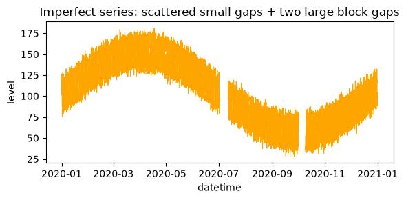
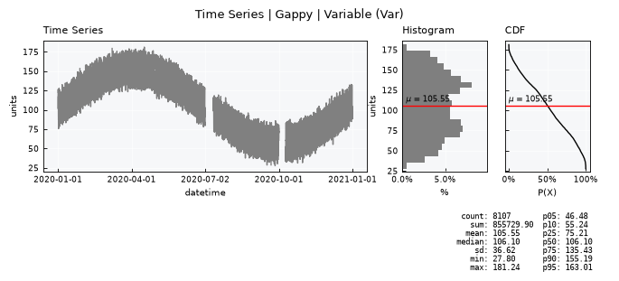
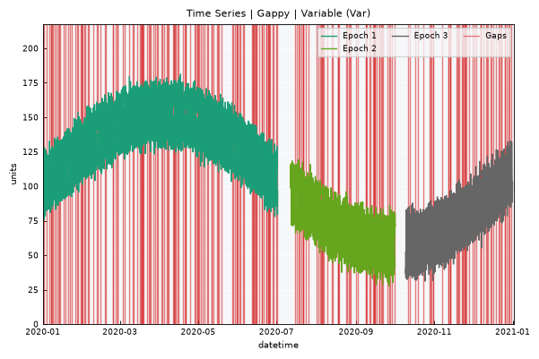
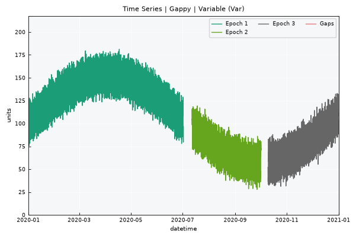

Time Series - Gaps and epochs#
Real time series are rarely perfect. This tutorial builds a synthetic series with two kinds of gaps – small scattered dropouts and larger block outages – and walks through how plans represents, inspects, and fills them.
Covered here:
Injecting realistic gaps into a synthetic series
The
.gapsizeattribute and what counts as a “small” gapEpochs: continuous stretches of data separated by gaps too large to bridge
Visualizing epochs with
.view_epochs()Filling small gaps with
.interpolate_gaps(), including the different interpolation methods and theis_interpolationflag column
Gap-filling only ever applies within an epoch – bridging the gap between epochs is a different, harder problem (it usually needs an external predictor or reference series) and is out of scope here.
Notebook setup#
For users running this tutorial as a Jupyter Notebook, this cell must be executed first:
import sys
from pathlib import Path
import pprint
import numpy as np
import pandas as pd
import matplotlib.pyplot as plt
# Install `plans` in `google.colab`.
# Use `pip install plans` for other environments.
if "google.colab" in sys.modules:
import os
os.system(f"{sys.executable} -m pip install -q plans")
# This avoids warnings related to uninstalled fonts
import logging
logging.getLogger('matplotlib.font_manager').setLevel(logging.ERROR)
# define output folder
OUTPUT_DIR = Path("outputs/time-series")
OUTPUT_DIR.mkdir(parents=True, exist_ok=True)
print(f"Outputs will be saved to: ./{OUTPUT_DIR}")
# fixed seed so the injected gaps are reproducible
RNG_SEED = 42
np.random.seed(RNG_SEED)
Outputs will be saved to: ./outputs/time-series
Create a perfect synthetic series#
Same starting point as the upscaling tutorial: a Trend-Seasonality-Noise archetype series.
from plans.datasets import TimeSeries
df_perfect = TimeSeries.make_synthetic_tsn(
start="2020-01-01",
end="2021-01-01",
base=100,
freq="1h",
trend=0.001,
noise_sd=4.0,
amplitude=50,
seasonal_period="YS",
minor_amplitude=20,
minor_seasonal_period="D"
)
print(f"Rows: {len(df_perfect)}")
df_perfect.head()
Rows: 8785
| datetime | level | |
|---|---|---|
| 0 | 2020-01-01 00:00:00 | 101.986857 |
| 1 | 2020-01-01 01:00:00 | 104.660089 |
| 2 | 2020-01-01 02:00:00 | 112.664284 |
| 3 | 2020-01-01 03:00:00 | 120.344550 |
| 4 | 2020-01-01 04:00:00 | 116.530954 |
Inject gaps#
Three kinds of imperfection, applied on a copy of the perfect data:
Scattered small gaps – each row has an independent, small probability of being null. Mimics random sensor dropouts or bad readings. These are small enough to interpolate across.
Two large block gaps – contiguous runs of nulls, long enough to represent real outages (e.g. equipment failure, maintenance). These are what split the record into separate epochs.
Two block gaps means the series ends up with three epochs: before the first outage, between the two outages, and after the second.
df_gappy = df_perfect.copy()
n = len(df_gappy)
# -- scattered small gaps (~3% of records, independently) --
SMALL_GAP_FRACTION = 0.03
mask_small = np.random.rand(n) < SMALL_GAP_FRACTION
df_gappy.loc[mask_small, "level"] = np.nan
print(f"Scattered small gaps injected: {mask_small.sum()} records")
# -- large block gap #1 (~10 days), placed near the middle --
BLOCK_1_HOURS = 24 * 10
block_1_start = n // 2
block_1_end = block_1_start + BLOCK_1_HOURS
df_gappy.loc[block_1_start:block_1_end, "level"] = np.nan
print(f"Block gap #1 injected: rows {block_1_start} to {block_1_end} "
f"({BLOCK_1_HOURS} hours / {BLOCK_1_HOURS / 24:.0f} days)")
# -- large block gap #2 (~8 days), placed near the end --
BLOCK_2_HOURS = 24 * 8
block_2_start = 3 * n // 4
block_2_end = block_2_start + BLOCK_2_HOURS
df_gappy.loc[block_2_start:block_2_end, "level"] = np.nan
print(f"Block gap #2 injected: rows {block_2_start} to {block_2_end} "
f"({BLOCK_2_HOURS} hours / {BLOCK_2_HOURS / 24:.0f} days)")
print(f"\nTotal null records: {df_gappy['level'].isna().sum()} / {n} "
f"({100 * df_gappy['level'].isna().sum() / n:.1f}%)")
fig, ax = plt.subplots(figsize=(6, 3))
ax.plot(df_gappy["datetime"], df_gappy["level"], color="orange", linewidth=0.8)
ax.set_title("Imperfect series: scattered small gaps + two large block gaps")
ax.set_xlabel("datetime")
ax.set_ylabel("level")
plt.tight_layout()
plt.show()
Scattered small gaps injected: 262 records
Block gap #1 injected: rows 4392 to 4632 (240 hours / 10 days)
Block gap #2 injected: rows 6588 to 6780 (192 hours / 8 days)
Total null records: 678 / 8785 (7.7%)

Save and load through the TimeSeries object#
Same workflow as the upscaling tutorial: export to CSV, then load through .load_data().
file_csv = OUTPUT_DIR / "time_series_gaps.csv"
df_gappy.to_csv(file_csv, sep=";", index=False)
print(f"Saved to: {file_csv}")
ts = TimeSeries(name="Gappy", alias="gap")
ts.load_data(
file_data=file_csv,
input_dtfield="datetime",
input_varfield="level",
in_sep=";",
)
Saved to: outputs/time-series/time_series_gaps.csv
Inspect the imperfect data#
The .gapsize attribute is the key threshold here: it defines, in number of consecutive missing records, how large a gap is allowed to be before it’s treated as a hard break rather than something fillable. Any run of nulls shorter than .gapsize stays inside the same epoch (a “small gap”); any run at or above it breaks the series into a new epoch.
v = ts.varfield
n_total = len(ts.data)
n_null = ts.data[v].isna().sum()
print(f"Total records: {n_total}")
print(f"Null records: {n_null} ({100 * n_null / n_total:.1f}%)")
print(f"Detected native frequency (dtfreq): {ts.dtfreq}")
print(f"Gap-size tolerance attribute (.gapsize): {ts.gapsize}")
ts.view_specs["n_dates"] = 5
ts.view()
Total records: 8785
Null records: 678 (7.7%)
Detected native frequency (dtfreq): h
Gap-size tolerance attribute (.gapsize): 6

Epochs#
An epoch is a continuous chunk of data where any internal gaps stay below the .gapsize tolerance – only small, fillable gaps live inside an epoch. A gap at or above .gapsize records ends the current epoch and starts a new one; epoch 0 is reserved for the gap itself.
.get_epochs() computes this labeling and returns (or sets, with inplace=True) a DataFrame with the extra id_epoch column.
df_epochs = ts.get_epochs()
df_epochs.head(10)
| datetime | v | id_epoch | |
|---|---|---|---|
| 0 | 2020-01-01 00:00:00 | 101.986857 | 1 |
| 1 | 2020-01-01 01:00:00 | 104.660089 | 1 |
| 2 | 2020-01-01 02:00:00 | 112.664284 | 1 |
| 3 | 2020-01-01 03:00:00 | 120.344550 | 1 |
| 4 | 2020-01-01 04:00:00 | 116.530954 | 1 |
| 5 | 2020-01-01 05:00:00 | 118.565793 | 1 |
| 6 | 2020-01-01 06:00:00 | 126.537440 | 1 |
| 7 | 2020-01-01 07:00:00 | 122.645609 | 1 |
| 8 | 2020-01-01 08:00:00 | NaN | 1 |
| 9 | 2020-01-01 09:00:00 | 116.643258 | 1 |
.update_epochs_stats() summarizes each epoch: how many records it holds, how many small gaps it contains, and its start/end timestamps. The result is stored in .epochs_stats.
ts.update_epochs_stats()
ts.epochs_stats
| name | id_epoch | n_epoch | n_gaps_small | start | end | color | |
|---|---|---|---|---|---|---|---|
| 0 | Gappy | 1 | 4392 | 137 | 2020-01-01 00:00:00 | 2020-07-01 23:00:00 | #1b9e77 |
| 1 | Gappy | 2 | 1955 | 54 | 2020-07-12 01:00:00 | 2020-10-01 11:00:00 | #66a61e |
| 2 | Gappy | 3 | 2003 | 53 | 2020-10-09 13:00:00 | 2020-12-31 23:00:00 | #666666 |
.view_epochs() plots each epoch in its own color, with the gaps highlighted in red. With two block gaps injected, three epochs should be visible.
ts.view_epochs(show=True)

Interpolate small gaps#
.interpolate_gaps() fills the small gaps within each epoch. It never bridges the gap between epochs – those records remain untouched (epoch 0 stays NaN).
Supported methods:
linear: linear interpolationnearest: uses the value of the closest data pointzero: fills gaps with zerosconstant: fills gaps with a constant value provided via theconstantparameterslinear: first order spline interpolationquadratic: second order spline interpolationcubic: third order spline interpolation
Caveat: none of these methods prevent artifact values from occurring (e.g. negative values, or spline overshoot near sharp transitions) – check your data range afterward.
With inplace=False, the returned DataFrame includes an is_interpolation flag column: 1 where the value was originally missing and got filled (or, for unfillable epoch-0 gaps, was missing and stayed NaN), 0 where the original value was already present. This makes it easy to later distinguish observed data from filled data downstream.
df_interpolation_linear = ts.interpolate_gaps(method="linear", inplace=False)
df_interpolation_linear.head(20)
| datetime | v | id_epoch | is_interpolation | v_interpolation | |
|---|---|---|---|---|---|
| 0 | 2020-01-01 00:00:00 | 101.986857 | 1 | 0 | 101.986857 |
| 1 | 2020-01-01 01:00:00 | 104.660089 | 1 | 0 | 104.660089 |
| 2 | 2020-01-01 02:00:00 | 112.664284 | 1 | 0 | 112.664284 |
| 3 | 2020-01-01 03:00:00 | 120.344550 | 1 | 0 | 120.344550 |
| 4 | 2020-01-01 04:00:00 | 116.530954 | 1 | 0 | 116.530954 |
| 5 | 2020-01-01 05:00:00 | 118.565793 | 1 | 0 | 118.565793 |
| 6 | 2020-01-01 06:00:00 | 126.537440 | 1 | 0 | 126.537440 |
| 7 | 2020-01-01 07:00:00 | 122.645609 | 1 | 0 | 122.645609 |
| 8 | 2020-01-01 08:00:00 | NaN | 1 | 1 | 119.644434 |
| 9 | 2020-01-01 09:00:00 | 116.643258 | 1 | 0 | 116.643258 |
| 10 | 2020-01-01 10:00:00 | 108.513976 | 1 | 0 | 108.513976 |
| 11 | 2020-01-01 11:00:00 | 103.717872 | 1 | 0 | 103.717872 |
| 12 | 2020-01-01 12:00:00 | 101.409023 | 1 | 0 | 101.409023 |
| 13 | 2020-01-01 13:00:00 | 87.648436 | 1 | 0 | 87.648436 |
| 14 | 2020-01-01 14:00:00 | NaN | 1 | 1 | 85.904307 |
| 15 | 2020-01-01 15:00:00 | 84.160178 | 1 | 0 | 84.160178 |
| 16 | 2020-01-01 16:00:00 | 79.216394 | 1 | 0 | 79.216394 |
| 17 | 2020-01-01 17:00:00 | 82.563462 | 1 | 0 | 82.563462 |
| 18 | 2020-01-01 18:00:00 | 77.029655 | 1 | 0 | 77.029655 |
| 19 | 2020-01-01 19:00:00 | 75.730782 | 1 | 0 | 75.730782 |
Quick check: how many records were actually filled, versus how many stayed as unfillable gaps (epoch 0)?
n_filled = df_interpolation_linear["is_interpolation"].sum()
n_still_na = df_interpolation_linear[f"{v}_interpolation"].isna().sum()
print(f"Records flagged as interpolation: {n_filled}")
print(f"Records still NaN after interpolation (epoch-0 / between-epoch gaps): {n_still_na}")
Records flagged as interpolation: 678
Records still NaN after interpolation (epoch-0 / between-epoch gaps): 435
df_interpolation_nearest = ts.interpolate_gaps(method="nearest", inplace=False)
df_interpolation_nearest.head(20)
| datetime | v | id_epoch | is_interpolation | v_interpolation | |
|---|---|---|---|---|---|
| 0 | 2020-01-01 00:00:00 | 101.986857 | 1 | 0 | 101.986857 |
| 1 | 2020-01-01 01:00:00 | 104.660089 | 1 | 0 | 104.660089 |
| 2 | 2020-01-01 02:00:00 | 112.664284 | 1 | 0 | 112.664284 |
| 3 | 2020-01-01 03:00:00 | 120.344550 | 1 | 0 | 120.344550 |
| 4 | 2020-01-01 04:00:00 | 116.530954 | 1 | 0 | 116.530954 |
| 5 | 2020-01-01 05:00:00 | 118.565793 | 1 | 0 | 118.565793 |
| 6 | 2020-01-01 06:00:00 | 126.537440 | 1 | 0 | 126.537440 |
| 7 | 2020-01-01 07:00:00 | 122.645609 | 1 | 0 | 122.645609 |
| 8 | 2020-01-01 08:00:00 | NaN | 1 | 1 | 122.645609 |
| 9 | 2020-01-01 09:00:00 | 116.643258 | 1 | 0 | 116.643258 |
| 10 | 2020-01-01 10:00:00 | 108.513976 | 1 | 0 | 108.513976 |
| 11 | 2020-01-01 11:00:00 | 103.717872 | 1 | 0 | 103.717872 |
| 12 | 2020-01-01 12:00:00 | 101.409023 | 1 | 0 | 101.409023 |
| 13 | 2020-01-01 13:00:00 | 87.648436 | 1 | 0 | 87.648436 |
| 14 | 2020-01-01 14:00:00 | NaN | 1 | 1 | 87.648436 |
| 15 | 2020-01-01 15:00:00 | 84.160178 | 1 | 0 | 84.160178 |
| 16 | 2020-01-01 16:00:00 | 79.216394 | 1 | 0 | 79.216394 |
| 17 | 2020-01-01 17:00:00 | 82.563462 | 1 | 0 | 82.563462 |
| 18 | 2020-01-01 18:00:00 | 77.029655 | 1 | 0 | 77.029655 |
| 19 | 2020-01-01 19:00:00 | 75.730782 | 1 | 0 | 75.730782 |
Testing with the constant approach – useful for flagging filled values distinctly rather than blending them into the natural range of the data:
df_interpolation_constant = ts.interpolate_gaps(method="constant", constant=666, inplace=False)
df_interpolation_constant.head(20)
| datetime | v | id_epoch | is_interpolation | v_interpolation | |
|---|---|---|---|---|---|
| 0 | 2020-01-01 00:00:00 | 101.986857 | 1 | 0 | 101.986857 |
| 1 | 2020-01-01 01:00:00 | 104.660089 | 1 | 0 | 104.660089 |
| 2 | 2020-01-01 02:00:00 | 112.664284 | 1 | 0 | 112.664284 |
| 3 | 2020-01-01 03:00:00 | 120.344550 | 1 | 0 | 120.344550 |
| 4 | 2020-01-01 04:00:00 | 116.530954 | 1 | 0 | 116.530954 |
| 5 | 2020-01-01 05:00:00 | 118.565793 | 1 | 0 | 118.565793 |
| 6 | 2020-01-01 06:00:00 | 126.537440 | 1 | 0 | 126.537440 |
| 7 | 2020-01-01 07:00:00 | 122.645609 | 1 | 0 | 122.645609 |
| 8 | 2020-01-01 08:00:00 | NaN | 1 | 1 | 666.000000 |
| 9 | 2020-01-01 09:00:00 | 116.643258 | 1 | 0 | 116.643258 |
| 10 | 2020-01-01 10:00:00 | 108.513976 | 1 | 0 | 108.513976 |
| 11 | 2020-01-01 11:00:00 | 103.717872 | 1 | 0 | 103.717872 |
| 12 | 2020-01-01 12:00:00 | 101.409023 | 1 | 0 | 101.409023 |
| 13 | 2020-01-01 13:00:00 | 87.648436 | 1 | 0 | 87.648436 |
| 14 | 2020-01-01 14:00:00 | NaN | 1 | 1 | 666.000000 |
| 15 | 2020-01-01 15:00:00 | 84.160178 | 1 | 0 | 84.160178 |
| 16 | 2020-01-01 16:00:00 | 79.216394 | 1 | 0 | 79.216394 |
| 17 | 2020-01-01 17:00:00 | 82.563462 | 1 | 0 | 82.563462 |
| 18 | 2020-01-01 18:00:00 | 77.029655 | 1 | 0 | 77.029655 |
| 19 | 2020-01-01 19:00:00 | 75.730782 | 1 | 0 | 75.730782 |
Apply in place#
inplace=True burns the interpolated values directly into ts.data (note: the is_interpolation flag itself is only returned in the inplace=False DataFrame – it is not currently persisted onto the object).
ts.interpolate_gaps(method="linear", inplace=True)
Re-running the epoch analysis should now show zero small gaps per epoch – only the between-epoch gaps remain:
ts.update_epochs_stats()
ts.epochs_stats
| name | id_epoch | n_epoch | n_gaps_small | start | end | color | |
|---|---|---|---|---|---|---|---|
| 0 | Gappy | 1 | 4392 | 0 | 2020-01-01 00:00:00 | 2020-07-01 23:00:00 | #1b9e77 |
| 1 | Gappy | 2 | 1955 | 0 | 2020-07-12 01:00:00 | 2020-10-01 11:00:00 | #66a61e |
| 2 | Gappy | 3 | 2003 | 0 | 2020-10-09 13:00:00 | 2020-12-31 23:00:00 | #666666 |
View epochs again – there should be no red line marking small gaps:
ts.view_epochs(show=True)

Recap#
Gaps come in two flavors: small (fillable) and large (epoch-breaking), separated by the
.gapsizethreshold..get_epochs()/.update_epochs_stats()/.view_epochs()let you inspect and visualize epoch structure before deciding how to handle gaps..interpolate_gaps()fills only the small, within-epoch gaps; between-epoch gaps require a different strategy (e.g. an external predictor) and are out of scope here.The
is_interpolationflag column (returned withinplace=False) lets you track which values are observed versus filled – useful for downstream QA or for excluding filled values from certain analyses.This tutorial deliberately stopped before combining gap-filling with
.scale_up()– that pairing (clean first vs. tolerate viabad_max) is a natural next tutorial.